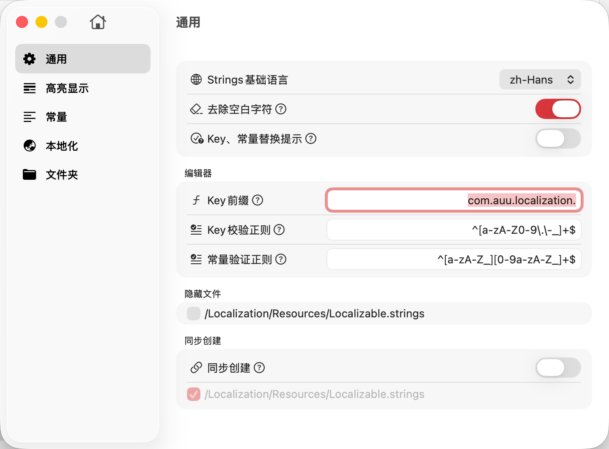

项目配置是 TransX 中针对单个项目的个性化设置中心。与全局偏好设置不同，这里的配置仅影响当前打开的项目，允许您为每个项目定制专属的工作环境和管理策略。
当您管理多个具有不同特点的项目时（例如：不同的编程语言、不同的本地化策略、不同的团队规范），项目配置功能确保每个项目都能使用最适合自己的设置，而不会相互干扰。
项目的基础设置和行为配置。包括项目元信息、默认行为、自动化选项等。通用设置定义了项目的基本工作模式，影响整体的交互体验和自动化流程。这里的配置涵盖了从文件处理策略到编辑行为的多个方面，是项目配置的核心部分。
视觉辅助和内容标识配置。通过颜色编码和视觉提示，高亮显示特定状态或类型的内容条目。例如：
合理配置高亮规则可以显著提升内容审查效率，让问题条目一目了然，减少遗漏和错误。
代码常量生成的详细配置。如果项目启用了常量模式，这个模块允许您精细控制常量的生成规则：
这些设置直接影响生成的代码质量和团队代码规范的一致性，对于维护代码库的整洁性至关重要。
语言和本地化策略的专项配置。管理项目支持的语言列表、语言间的关系、本地化工作流程等：
本地化配置确保项目的多语言支持符合产品需求和国际化标准，是多语言管理的策略中枢。
项目文件结构和路径管理配置。定义 TransX 如何理解和处理项目的目录结构：
.strings 文件的搜索路径文件夹配置直接影响 TransX 的文件扫描和输出行为，合理设置可以让工具更好地适应项目的实际结构。
项目配置保存在项目根目录的 TransX 配置文件中（通常是
.localiztion），并随项目一起管理。这意味着：
通过合理配置这些选项，您可以让 TransX 完美适应项目的特定需求，最大化提升多语言管理的效率和质量。
点击上方链接深入了解各配置模块的详细选项和使用方法。